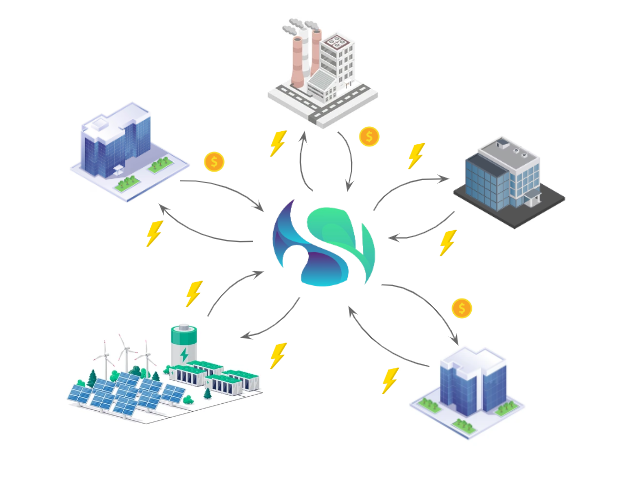

Save funds by locally exchanging energy
Reduce your energy bill by buying and selling sustainable energy locally. We provide an automated peer-to-peer energy-trading platform to exchange locally produced energy.

Reduce your energy bill by buying and selling sustainable energy locally. We provide an automated peer-to-peer energy-trading platform to exchange locally produced energy.
Companies within industrial terrains experience the issues of net congestion more frequently by the day, such as power outages, low returns on energy surpluses, and expensive energy bills. Siphon addresses these issues by providing an AI-based platform on which participants can exchange locally produced energy in order to increase the reliability of their energy, reduce their energy expenses, and automatically avoid the impending risk of net congestion!
Create your account to start accessing our energy trading features.
Define your energy needs or production capacity to match with local buyers or sellers.
Browse available offers or list your own energy for trade, and manage transactions easily.
"Our company was struggling with excess energy during off-peak hours, and we had to send it back to the grid. Thanks to Siphon, we've been able to trade our surplus energy and lower our energy costs by 20% in just a few months"
- Jeroen Koppes
Facility Manager @ Oceanco
"We were constantly overpaying for energy, especially electricity, during peak hours, which impacted our profitability. Siphon gave us the flexibility to buy affordable energy when needed, cutting our energy expenses by 15%."
- Paul Broersen
Quality Manager @ Royal de Ree

"As a renewable energy provider, we wanted to ensure that none of our solar energy went to waste. Siphon allowed us to monetize excess energy and reinvest in our sustainability efforts. It's truly transformed how we operate."
- Remko Ekkers
Operations Manager @ Vos Transport Group